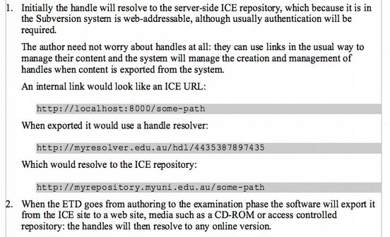

Challenge: Produce XHTML and print from Google Docs
2007-07-05
I'm writing a paper about the ICE style system.
As background I needed to show why one needed to design a set of word processor styles for writing HTML and then write software to convert documents. I have already looked at the problems with Word 2003 and problems also with NeoOffice 2.1, which is a variant of OpenOffice.org.
I have yet to write up an experiment I did with Word 2007, but now it is time to look at Google Docs. It's a web based word processor so it should be good for the web, right?
I've already written about the really really awful job that Google docs does with document interchange (back when it was called Writely) and its awful list formatting which remains. My previous conclusion was that this application would be perfect to use with a set of styles like we do with ICE, so that you could interchange between the limited Google docs interface and word processors.
For this little series I've been trying to put in two chunks of a paper of mine to see how each word processor handles it for both print (PDF) and web (HTML / XHTML) export.
Google Docs does OK on the blockquote issue. There' a button for making
a blockquote:
I missed this at first, and tried to make a blockquote using the indent button, but then what I did was switch to the Edit HTML view and put in a blockquote element, which rendered in a little box, which made me realize that Google Docs does understand quotes.
The bad news is that it seems to be allergic to paragraphs – everything is done with break elements
(<br />) which is really ugly and just plain wrong, cos it means there
is no way to distinguish between a line-break within a paragraph and a
paragraph break, and there is no way you'd be able to add classes to
paragraphs to change their semantic flavour.
As for lists, it's nearly as bad as the other two word processors I'm afraid, but it can be made to work if you fiddle around.
Here's the target:

I made a list item, then indented a couple of bits of text under it. The initial result was a one element list, followed by a <div> with a 40 pixel margin. Not just wrong but fragile too – as this will only work when everything is set up just right.
Except that when I actually simulated typing the document rather than pasting in text and formatting it I was able to figure out how to create a list item, go to the end, hit Shit-Enter and paste in the extra paragraphs I want in the list item, then make a second item and so on. This is far from intuitive and I would never used it for real – far too slow.
And to get the pre formated bits I wanted I had to switch to Edit HTML and enter them by hand. Not something I'd want to do often.
I've published the document so you can have a look.
You can generate PDF, but it has not headers and footers.
Didn't try images in any of these tests but creating and managing images in an online word processor.
There's also no bibliographic solution for Google Docs that I'm aware of, so no way to manage a bibliography except manually. For Word there's EndNote, and the ICE project has contributed an Alpha-quality Zotero extension for Writer which we think is promising.
I tried importing my paper with pretty much the same results as last March, it mangled the document formatting and dumped all my styles. Useless for interchange with real styled word processing documents.
Conclusion
This is not as bad as Word or Writer for HTML, but only if you put in a lot of extra effort, you may as well just get a text editor, with the amount of work you'd have to do to get really good HTML. I can't see how you'd use this thing to write real papers online though, except maybe in the draft stage. That's a pity because if it could be made to respect and preserve styles and tie them to the HTML view then it could be great. As always, if anyone at Google wants to talk it's pt@ptsefton.com.